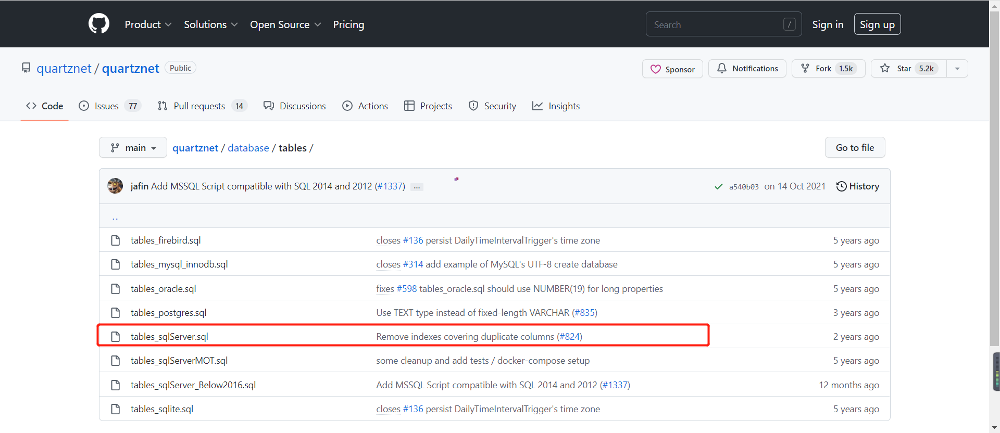
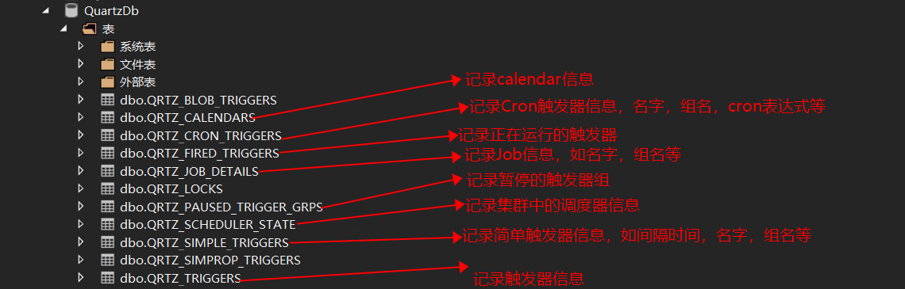
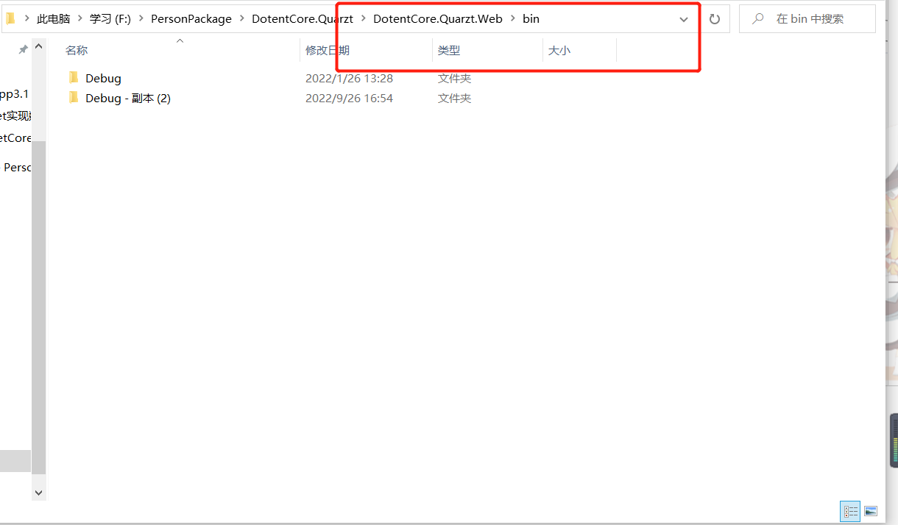
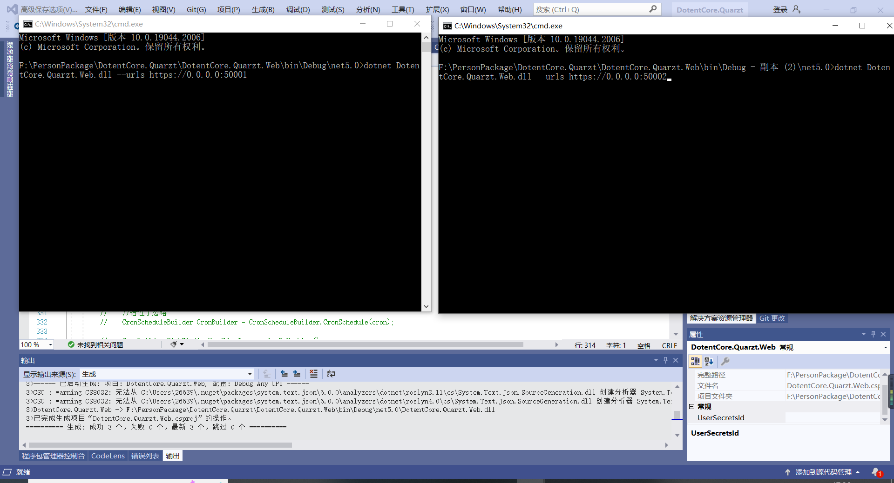

# 前言
Quartz.NET是一个强大、开源、轻量的作业调度框架,你能够用它来为执行一个作业而创建简单的或复杂的作业调度.
# 实现
下面记录一下通过
JobStores实现数据的持久化
# 什么是 JobStores？
JobStore 负责记录你提供到调度器的所有 “工作数据”：
所有的 Job、所有的 Trigger、所有的 Calendar (org.quartz.Calendar) 等等.
为你的 Quartz 调度器选择一个合适的 JobStore 是一个重要的步骤.
幸运的是，一旦你明白不同的 JobStore 之间的差异，那么作出合适的选择是十分简单的.(官方翻译)
# Quartz.net 提供了两种 JobStore:RAMJobStore,AdoJobStore.
- RAMJobStore:RAMJobStore 是最简单的 JobStore，顾名思义这种 JobStore 将所有的数据都存放在内存中，这也是它运行速度快的原因，但是弊端也很明显：一旦应用结束或者遇到断电所有的数据都会丢失.(默认的方式)
- AdoJobStore：AdoJobStore 通过 Ado.net 将数据存储在数据库中，因此可以解决断电数据丢失的问题，但是因为要读写数据库所以效率相对较低.
# 选择 AdoJobStore 实现数据持久化
# 第一步：添加数据库
脚本地址
选择自己对应的数据库脚本，我这里选择的是 sqlserver

执行脚本之后生成表

# 第二步配置调度器工厂 (StdSchedulerFactory) 属性
private Task<IScheduler> GetScheduler () | |
{ | |
// 获取链接数据库字符串 | |
string connStr = AppsettingExtend.Get ("ConnectionStrings", "DBConnection"); | |
if (_scheduler != null) | |
return _scheduler; | |
else | |
{ | |
var properties = new NameValueCollection | |
{ | |
// 这个时间大于 10000（10 秒）会导致 MISFIRE_INSTRUCTION_DO_NOTHING 不起作用 (不加这句 MISFIRE_INSTRUCTION_DO_NOTHING 不生效？？？) | |
["quartz.jobStore.misfireThreshold"]="1000", | |
//scheduler 名字 | |
["quartz.scheduler.instanceName"] = "MyScheduler", | |
// 线程池个数 | |
["quartz.threadPool.threadCount"] = "20", | |
// 类型为 JobStoreXT, 事务 | |
["quartz.jobStore.type"] = "Quartz.Impl.AdoJobStore.JobStoreTX, Quartz", | |
//JobDataMap 中的数据都是字符串 | |
["quartz.jobStore.useProperties"] = "true", | |
// 数据源名称 | |
["quartz.jobStore.dataSource"] = "myDS", | |
// 数据表名前缀 | |
["quartz.jobStore.tablePrefix"] = "QRTZ_", | |
// 使用 Sqlserver 的 Ado 操作代理类 | |
["quartz.jobStore.driverDelegateType"] = "Quartz.Impl.AdoJobStore.SqlServerDelegate, Quartz", | |
// 数据源连接字符串 | |
["quartz.dataSource.myDS.connectionString"] = connStr, | |
// 数据源的数据库 | |
["quartz.dataSource.myDS.provider"] = "SqlServer", | |
// 序列化类型 | |
["quartz.serializer.type"] = "json",//binary | |
// 自动生成 scheduler 实例 ID，主要为了保证集群中的实例具有唯一标识 | |
["quartz.scheduler.instanceId"] = "AUTO", | |
// 是否配置集群 | |
["quartz.jobStore.clustered"] = "true", | |
}; | |
// 实例化工厂 | |
ISchedulerFactory sf = new StdSchedulerFactory (properties); | |
this._scheduler = sf.GetScheduler (); | |
return _scheduler; | |
} | |
} |
通过上面的配置就实现了数据的持久化和集群.
# 解决每次程序重新启动都会立即触发一次 cronTrigger 类型的 job
例如我们 cron 是
0/10 * * * * ? *. 在每次整秒触发 (17:20:00,17:20:10,17:20:20 .....)
但是我们的程序在 17:21:08 启动这个时候会立即触发一次.
这不符合我们的预期。我们的预期是在启动的下一个周期节点再触发 (17:21:10)
这个时候我加了misfire机制
private TriggerBuilder CronBuilder (TriggerBuilder builder, Jobs jobInfo) | |
{ | |
string cron = jobInfo.CronExpression; | |
// 例如 2022/09/26 10:00 执行，此时 tigger 是暂停状态.10:01 恢复。上次的不执行，忽略 | |
// 错过了忽略 | |
builder.WithCronSchedule (cron, x => x.WithMisfireHandlingInstructionDoNothing ()); | |
return builder; | |
} |
但是发现并不生效，最后发现要加一句配置 (上面第二步)
// 这个时间大于 10000（10 秒）会导致 MISFIRE_INSTRUCTION_DO_NOTHING 不起作用 (不加这句 MISFIRE_INSTRUCTION_DO_NOTHING 不生效？？？) | |
["quartz.jobStore.misfireThreshold"]="1000", |
# 集群
集群也是在上面的第二步就行配置 (true 是集群，false 则反之)
["quartz.jobStore.clustered"] = "true" |
在 bin 目录下复制一个 dubug 副本

通过 dotnet 命令开启两个程序
dotnet DotentCore.Quarzt.Web.dll --urls https://0.0.0.0:50002 |

# 演示非集群
可以看出会出现重复执行，并且一台程序 (服务器) 关闭之后。另外程序 (服务器) 一台并不会自动执行
# 演示集群
可以看出没有出现重复执行，并且一台程序 (服务器) 关闭之后。另外一台程序 (服务器) 开始自动执行，这种机制大大增加了任务调度的容灾性能.
# 参考文档
参考 1
参考 2
参考 3
参考 4